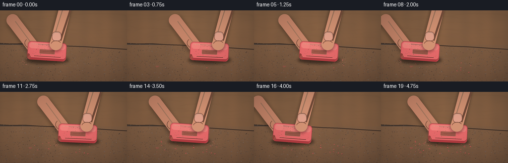
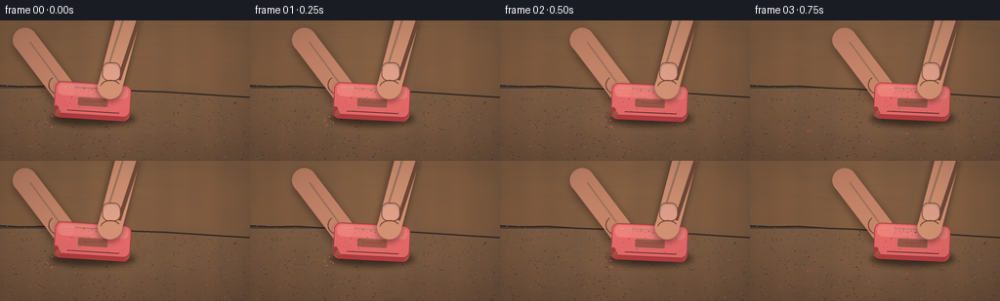

CODING AGENTS AS PIXEL WORLD MODELS
traex/GPT-5.6-Sol · material_0016
点击播放 · 原生 RGB 像素
逐轮保存的候选
回放视频、检查图与代码变化。
每份候选均可单独播放。实际图片检查记录在下方工具轨迹中。
候选 01播放与检查图
点击播放 · 原生 RGB 像素

展开代码变化
--- 上一保存版本
+++ 本次保存版本
@@ -0,0 +1,232 @@
+from pathlib import Path
+import math
+import numpy as np
+from PIL import Image, ImageDraw, ImageFilter
+import artifact_io
+
+# Deterministic procedural macro video: a pink rubber eraser, held by fingertips,
+# is scrubbed back and forth over coarse garnet sandpaper.
+W, H, N = 256, 144, 20
+S = 4
+WW, HH = W*S, H*S
+rng = np.random.default_rng(1601)
+
+# Fixed texture coordinates so that the surface remains still while the eraser moves.
+grit = []
+for _ in range(1150):
+ x = rng.uniform(-5, W+5)
+ y_top = 66 + 0.055*x
+ y = rng.uniform(y_top, H+3)
+ r = rng.choice([0.20, .28, .38, .50, .65, .85], p=[.12,.21,.25,.22,.14,.06])
+ shade = rng.integers(-30, 35)
+ grit.append((x,y,r,int(shade),rng.random()))
+
+wood_marks = [(rng.uniform(-30, W+30), rng.uniform(9,67), rng.uniform(35,120),
+ rng.uniform(.25,1.0), rng.uniform(.15,.55)) for _ in range(28)]
+
+crumbs = []
+for k in range(48):
+ # Material collects mainly along and just below the rubbing path.
+ x = rng.uniform(58, 185)
+ y = rng.uniform(101, 124) + .035*(x-120)
+ size = rng.uniform(.35, 1.35)
+ appear = rng.integers(3, 19)
+ crumbs.append((x,y,size,int(appear),rng.uniform(-1,1),rng.uniform(0,1)))
+
+def scpoly(points): return [(int(x*S), int(y*S)) for x,y in points]
+def ell(draw, box, fill, outline=None, width=1):
+ draw.ellipse(tuple(int(v*S) for v in box), fill=fill, outline=outline, width=max(1,int(width*S)))
+def rr(draw, box, radius, fill, outline=None, width=1):
+ draw.rounded_rectangle(tuple(int(v*S) for v in box), radius=int(radius*S), fill=fill, outline=outline,
+ width=max(1,int(width*S)))
+
+def capsule(layer, p1, p2, width, fill):
+ d=ImageDraw.Draw(layer)
+ d.line((int(p1[0]*S),int(p1[1]*S),int(p2[0]*S),int(p2[1]*S)), fill=fill, width=int(width*S))
+ r=width/2
+ ell(d,(p1[0]-r,p1[1]-r,p1[0]+r,p1[1]+r),fill)
+ ell(d,(p2[0]-r,p2[1]-r,p2[0]+r,p2[1]+r),fill)
+
+def make_background():
+ # Warm, out-of-focus workbench.
+ yy, xx = np.mgrid[0:HH, 0:WW]
+ yn=yy/S; xn=xx/S
+ base=np.zeros((HH,WW,3),dtype=np.float32)
+ wood_noise = rng.normal(0,1.0,(HH,WW))
+ wood_wave = 3.0*np.sin(xn/15 + 0.4*np.sin(yn/7)) + 1.5*np.sin(xn/4.7)
+ grad=np.clip(1-yn/160,0,1)
+ base[...,0]=118 + 20*grad + wood_wave + wood_noise*1.3
+ base[...,1]=83 + 18*grad + wood_wave*.55 + wood_noise
+ base[...,2]=58 + 13*grad + wood_wave*.25 + wood_noise*.7
+ im=Image.fromarray(np.uint8(np.clip(base,0,255)),'RGB').convert('RGBA')
+ # blurred wood grain lines behind the paper
+ marks=Image.new('RGBA',(WW,HH),(0,0,0,0)); md=ImageDraw.Draw(marks)
+ for x,y,l,w,a in wood_marks:
+ md.arc((int((x-l/2)*S),int((y-5)*S),int((x+l/2)*S),int((y+5)*S)),180,355,
+ fill=(67,40,24,int(42*a)),width=max(1,int(w*S)))
+ marks=marks.filter(ImageFilter.GaussianBlur(1.0*S))
+ im=Image.alpha_composite(im,marks)
+
+ # Sandpaper sheet: fixed trapezoidal plane with a subtly irregular upper edge.
+ paper=Image.new('RGBA',(WW,HH),(0,0,0,0)); pd=ImageDraw.Draw(paper)
+ edge=[(-8,66),(22,67.5),(50,67),(80,69),(108,70),(139,72),(169,73),(200,75),(230,77),(264,79)]
+ pd.polygon(scpoly(edge+[(W+8,H+5),(-8,H+5)]),fill=(78,67,60,255))
+ # broad light gradient across the abrasive sheet
+ for j in range(70,H):
+ a=int(24*(j-70)/(H-70))
+ pd.line((0,j*S,WW,j*S),fill=(106+a//4,91+a//5,79+a//6,35),width=S)
+ # torn sheet rim with dark under-edge
+ pd.line(scpoly(edge),fill=(41,31,27,210),width=2*S)
+ pd.line(scpoly([(x,y-.7) for x,y in edge]),fill=(137,115,96,190),width=max(1,S//2))
+ # Dense angular mineral grains, each with a lit and shadow side.
+ for x,y,r,sh,q in grit:
+ c=np.clip(np.array([92,77,68])+sh,24,160).astype(int)
+ if q<.58:
+ pts=[(x-r*1.4,y),(x-r*.15,y-r),(x+r*1.2,y-r*.1),(x+r*.2,y+r*.8)]
+ pd.polygon(scpoly(pts),fill=(int(c[0]),int(c[1]),int(c[2]),235))
+ if r>.45:
+ pd.line(scpoly([(x-r*.5,y-r*.45),(x+r*.55,y-r*.2)]),fill=(177,151,127,105),width=1)
+ else:
+ ell(pd,(x-r,y-r*.7,x+r,y+r*.7),(int(c[0]),int(c[1]),int(c[2]),230))
+ # rubbing zone: faint polished horizontal scratches
+ for k in range(16):
+ y=96+k*1.25+rng.uniform(-.35,.35)
+ x0=rng.uniform(49,87); x1=rng.uniform(168,205)
+ pd.line((int(x0*S),int(y*S),int(x1*S),int((y+rng.uniform(-.2,.2))*S)),
+ fill=(173,147,125,rng.integers(15,35)), width=1)
+ im=Image.alpha_composite(im,paper)
+ return im
+
+BASE=make_background()
+
+def make_eraser():
+ # Draw at native supersampled resolution on a local transparent tile.
+ ew,eh=94,60
+ tile=Image.new('RGBA',(ew*S,eh*S),(0,0,0,0)); d=ImageDraw.Draw(tile)
+ # A tiny lower bevel, darker from abrasive contact.
+ rr(d,(8,14,86,47),7,(187,69,72,255))
+ d.rectangle((13*S,38*S,81*S,47*S),fill=(178,60,64,255))
+ # Main soft-rubber face.
+ rr(d,(8,10,86,43),7,(229,105,105,255),outline=(158,60,65,255),width=.8)
+ # broad top-face highlight and subtle molded bands
+ d.rounded_rectangle((11*S,12*S,83*S,24*S),radius=5*S,fill=(243,129,125,235))
+ d.line((15*S,15*S,76*S,15*S),fill=(255,181,169,105),width=S)
+ d.line((22*S,39*S,75*S,39*S),fill=(148,47,55,80),width=S)
+ # worn, dirty working corners
+ ell(d,(7.5,35,13,43),(158,61,60,180))
+ ell(d,(10,39,15,45),(191,83,76,180))
+ # believable pores and small scuffs in the rubber
+ local_rng=np.random.default_rng(414)
+ for _ in range(75):
+ x=local_rng.uniform(13,81); y=local_rng.uniform(15,40)
+ r=local_rng.uniform(.12,.42)
+ col=(137,53,59,local_rng.integers(20,65)) if local_rng.random()<.62 else (255,190,180,50)
+ ell(d,(x-r,y-r,x+r,y+r),col)
+ # embossed central lozenge, not distracting typography
+ rr(d,(32,25,63,34),2,(207,81,84,85),outline=(248,152,145,100),width=.5)
+ d.line((38*S,29*S,57*S,29*S),fill=(164,55,61,70),width=S)
+ return tile
+ERASER=make_eraser()
+
+def paste_center(base, sprite, center, angle=0, alpha=255):
+ sp=sprite.rotate(angle, resample=Image.Resampling.BICUBIC, expand=True)
+ if alpha != 255:
+ a=sp.getchannel('A').point(lambda p: p*alpha//255)
+ sp.putalpha(a)
+ x=int(center[0]*S-sp.width/2); y=int(center[1]*S-sp.height/2)
+ base.alpha_composite(sp,(x,y))
+
+def render(i):
+ im=BASE.copy()
+ # Slightly more than two clear back-and-forth strokes over five seconds.
+ phase=2*math.pi*(2.15*i/(N-1)-0.10)
+ cx=121+45*math.sin(phase)
+ velocity=45*(2*math.pi*2.15/(N-1))*math.cos(phase)
+ cy=85.0 + .6*math.sin(phase*2)
+ angle=-3.5 + 1.0*math.sin(phase+.5)
+
+ # Existing pink crumbs (accumulating over time) sit on the paper.
+ debris=Image.new('RGBA',(WW,HH),(0,0,0,0)); dd=ImageDraw.Draw(debris)
+ for x,y,s,appear,skew,q in crumbs:
+ if i>=appear:
+ # A tiny gritty shadow and irregular rubber curl.
+ ell(dd,(x-s*.75,y+s*.35,x+s*.9,y+s*1.15),(25,21,20,110))
+ if q<.35:
+ dd.arc((int((x-s*1.7)*S),int((y-s)*S),int((x+s*1.7)*S),int((y+s)*S)),
+ 10,280,fill=(220,91,91,235),width=max(1,int(.55*S)))
+ else:
+ dd.polygon(scpoly([(x-s,y),(x+s*.6,y-s*.5),(x+s,y+s*.55),(x-s*.5,y+s)]),
+ fill=(218,87,86,235))
+ dd.line(scpoly([(x-s*.4,y-s*.15),(x+s*.35,y-s*.25)]),fill=(255,155,143,130),width=1)
+ im=Image.alpha_composite(im,debris)
+
+ # Contact shadow and rubbed streak, anchoring the object firmly to the surface.
+ sh=Image.new('RGBA',(WW,HH),(0,0,0,0)); sd=ImageDraw.Draw(sh)
+ ell(sd,(cx-43,93,cx+44,108),(13,9,8,145))
+ sh=sh.filter(ImageFilter.GaussianBlur(3.0*S))
+ im=Image.alpha_composite(im,sh)
+
+ # The thumb lies behind the eraser and moves with it.
+ hand_back=Image.new('RGBA',(WW,HH),(0,0,0,0))
+ hbshadow=Image.new('RGBA',(WW,HH),(0,0,0,0))
+ capsule(hbshadow,(cx-67,24),(cx-30,75),26,(31,18,14,110))
+ hbshadow=hbshadow.filter(ImageFilter.GaussianBlur(4*S)); im=Image.alpha_composite(im,hbshadow)
+ capsule(hand_back,(cx-69,20),(cx-31,70),25,(198,133,105,255))
+ hbd=ImageDraw.Draw(hand_back)
+ # warm lit ridge and crease on thumb
+ hbd.line((int((cx-64)*S),int(22*S),int((cx-34)*S),int(63*S)),fill=(234,174,142,125),width=2*S)
+ hbd.arc((int((cx-45)*S),int(56*S),int((cx-23)*S),int(76*S)),80,230,fill=(122,72,59,100),width=S)
+ im=Image.alpha_composite(im,hand_back)
+
+ # Very restrained motion echo at the high-speed middle of each stroke.
+ if abs(velocity)>18:
+ trail=Image.new('RGBA',(WW,HH),(0,0,0,0))
+ off=-math.copysign(min(3.0,abs(velocity)/15),velocity)
+ paste_center(trail,ERASER,(cx+off,cy),angle,50)
+ trail=trail.filter(ImageFilter.GaussianBlur(.7*S)); im=Image.alpha_composite(im,trail)
+
+ paste_center(im,ERASER,(cx,cy),angle,255)
+
+ # Index finger presses on the top: long capsule ending in a soft fingertip.
+ finger_shadow=Image.new('RGBA',(WW,HH),(0,0,0,0))
+ capsule(finger_shadow,(cx+37,-10),(cx+18,70),26,(38,22,17,115))
+ finger_shadow=finger_shadow.filter(ImageFilter.GaussianBlur(3*S)); im=Image.alpha_composite(im,finger_shadow)
+ finger=Image.new('RGBA',(WW,HH),(0,0,0,0)); fd=ImageDraw.Draw(finger)
+ capsule(finger,(cx+39,-12),(cx+18,68),25,(211,146,115,255))
+ # finger side shade and highlight
+ fd.line((int((cx+47)*S),0,int((cx+27)*S),int(61*S)),fill=(143,86,70,105),width=4*S)
+ fd.line((int((cx+31)*S),0,int((cx+13)*S),int(57*S)),fill=(246,188,153,115),width=2*S)
+ # fingernail with lunula and specular rim
+ fd.rounded_rectangle((int((cx+10)*S),int(43*S),int((cx+29)*S),int(62*S)),radius=7*S,
+ fill=(225,161,139,255),outline=(154,91,78,150),width=S)
+ fd.arc((int((cx+11)*S),int(44*S),int((cx+28)*S),int(59*S)),180,350,fill=(255,207,183,150),width=S)
+ fd.arc((int((cx+8)*S),int(61*S),int((cx+29)*S),int(76*S)),190,330,fill=(132,75,62,115),width=S)
+ im=Image.alpha_composite(im,finger)
+
+ # A few freshly airborne rubber/sand grains at the trailing contact edge.
+ dust=Image.new('RGBA',(WW,HH),(0,0,0,0)); du=ImageDraw.Draw(dust)
+ vr=1 if velocity>0 else -1
+ speed=min(1,abs(velocity)/32)
+ if speed>.25:
+ drng=np.random.default_rng(900+i)
+ tx=cx-38*vr
+ for k in range(int(8+12*speed)):
+ dx=-vr*drng.uniform(0,17)*speed
+ dy=drng.uniform(-2,11)
+ r=drng.uniform(.25,.7)
+ col=(226,112,103,int(drng.uniform(65,185))) if k%3 else (158,132,108,int(drng.uniform(45,120)))
+ ell(du,(tx+dx-r,99+dy-r,tx+dx+r,99+dy+r),col)
+ im=Image.alpha_composite(im,dust)
+
+ # Gentle vignette and camera-like contrast.
+ arr=np.asarray(im.convert('RGB')).astype(np.float32)
+ yy,xx=np.mgrid[0:HH,0:WW]
+ dx=(xx-WW/2)/(WW/2); dy=(yy-HH/2)/(HH/2)
+ vign=np.clip(1-.12*(dx*dx+dy*dy),.80,1)[...,None]
+ arr=(arr-8)*vign+8
+ out=Image.fromarray(np.uint8(np.clip(arr,0,255))).resize((W,H),Image.Resampling.LANCZOS)
+ return np.asarray(out,dtype=np.uint8)
+
+frames=np.stack([render(i) for i in range(N)],axis=0)
+artifact_io.save(frames,Path(__file__).resolve().parent)
+print('saved',frames.shape,frames.dtype)
可观测工具轨迹
实际执行的命令与返回图片。
命令 1exit 0
/bin/bash -lc "cat prompt.txt && printf '\\n---RULES---\\n' && cat GENERATION_RULES.md && printf '\\n---SPEC---\\n' && cat task_spec.json"
命令 2exit 0
/bin/bash -lc "find . -maxdepth 2 -type f -printf '%p %s bytes\\n' | sort | head -200"
命令 3exit 0
/bin/bash -lc "sed -n '1,240p' artifact_io.py"
命令 4exit 0
/bin/bash -lc "cat > generate.py <<'PY'
from pathlib import Path
import math
import numpy as np
from PIL import Image, ImageDraw, ImageFilter
import artifact_io
# Deterministic procedural macro video: a pink rubber eraser, held by fingertips,
# is scrubbed back and forth over coarse garnet sandpaper.
W, H, N = 256, 144, 20
S = 4
WW, HH = W*S, H*S
rng = np.random.default_rng(1601)
# Fixed texture coordinates so that the surface remains still while the eraser moves.
grit = []
for _ in range(1150):
x = rng.uniform(-5, W+5)
y_top = 66 + 0.055*x
y = rng.uniform(y_top, H+3)
r = rng.choice([0.20, .28, .38, .50, .65, .85], p=[.12,.21,.25,.22,.14,.06])
shade = rng.integers(-30, 35)
grit.append((x,y,r,int(shade),rng.random()))
wood_marks = [(rng.uniform(-30, W+30), rng.uniform(9,67), rng.uniform(35,120),
rng.uniform(.25,1.0), rng.uniform(.15,.55)) for _ in range(28)]
crumbs = []
for k in range(48):
# Material collects mainly along and just below the rubbing path.
x = rng.uniform(58, 185)
y = rng.uniform(101, 124) + .035*(x-120)
size = rng.uniform(.35, 1.35)
appear = rng.integers(3, 19)
crumbs.append((x,y,size,int(appear),rng.uniform(-1,1),rng.uniform(0,1)))
def scpoly(points): return [(int(x*S), int(y*S)) for x,y in points]
def ell(draw, box, fill, outline=None, width=1):
draw.ellipse(tuple(int(v*S) for v in box), fill=fill, outline=outline, width=max(1,int(width*S)))
def rr(draw, box, radius, fill, outline=None, width=1):
draw.rounded_rectangle(tuple(int(v*S) for v in box), radius=int(radius*S), fill=fill, outline=outline,
width=max(1,int(width*S)))
def capsule(layer, p1, p2, width, fill):
d=ImageDraw.Draw(layer)
d.line((int(p1[0]*S),int(p1[1]*S),int(p2[0]*S),int(p2[1]*S)), fill=fill, width=int(width*S))
r=width/2
ell(d,(p1[0]-r,p1[1]-r,p1[0]+r,p1[1]+r),fill)
ell(d,(p2[0]-r,p2[1]-r,p2[0]+r,p2[1]+r),fill)
def make_background():
# Warm, out-of-focus workbench.
yy, xx = np.mgrid[0:HH, 0:WW]
yn=yy/S; xn=xx/S
base=np.zeros((HH,WW,3),dtype=np.float32)
wood_noise = rng.normal(0,1.0,(HH,WW))
wood_wave = 3.0*np.sin(xn/15 + 0.4*np.sin(yn/7)) + 1.5*np.sin(xn/4.7)
grad=np.clip(1-yn/160,0,1)
base[...,0]=118 + 20*grad + wood_wave + wood_noise*1.3
base[...,1]=83 + 18*grad + wood_wave*.55 + wood_noise
base[...,2]=58 + 13*grad + wood_wave*.25 + wood_noise*.7
im=Image.fromarray(np.uint8(np.clip(base,0,255)),'RGB').convert('RGBA')
# blurred wood grain lines behind the paper
marks=Image.new('RGBA',(WW,HH),(0,0,0,0)); md=ImageDraw.Draw(marks)
for x,y,l,w,a in wood_marks:
md.arc((int((x-l/2)*S),int((y-5)*S),int((x+l/2)*S),int((y+5)*S)),180,355,
fill=(67,40,24,int(42*a)),width=max(1,int(w*S)))
marks=marks.filter(ImageFilter.GaussianBlur(1.0*S))
im=Image.alpha_composite(im,marks)
# Sandpaper sheet: fixed trapezoidal plane with a subtly irregular upper edge.
paper=Image.new('RGBA',(WW,HH),(0,0,0,0)); pd=ImageDraw.Draw(paper)
edge=[(-8,66),(22,67.5),(50,67),(80,69),(108,70),(139,72),(169,73),(200,75),(230,77),(264,79)]
pd.polygon(scpoly(edge+[(W+8,H+5),(-8,H+5)]),fill=(78,67,60,255))
# broad light gradient across the abrasive sheet
for j in range(70,H):
a=int(24*(j-70)/(H-70))
pd.line((0,j*S,WW,j*S),fill=(106+a//4,91+a//5,79+a//6,35),width=S)
# torn sheet rim with dark under-edge
pd.line(scpoly(edge),fill=(41,31,27,210),width=2*S)
pd.line(scpoly([(x,y-.7) for x,y in edge]),fill=(137,115,96,190),width=max(1,S//2))
# Dense angular mineral grains, each with a lit and shadow side.
for x,y,r,sh,q in grit:
c=np.clip(np.array([92,77,68])+sh,24,160).astype(int)
if q<.58:
pts=[(x-r*1.4,y),(x-r*.15,y-r),(x+r*1.2,y-r*.1),(x+r*.2,y+r*.8)]
pd.polygon(scpoly(pts),fill=(int(c[0]),int(c[1]),int(c[2]),235))
if r>.45:
pd.line(scpoly([(x-r*.5,y-r*.45),(x+r*.55,y-r*.2)]),fill=(177,151,127,105),width=1)
else:
ell(pd,(x-r,y-r*.7,x+r,y+r*.7),(int(c[0]),int(c[1]),int(c[2]),230))
# rubbing zone: faint polished horizontal scratches
for k in range(16):
y=96+k*1.25+rng.uniform(-.35,.35)
x0=rng.uniform(49,87); x1=rng.uniform(168,205)
pd.line((int(x0*S),int(y*S),int(x1*S),int((y+rng.uniform(-.2,.2))*S)),
fill=(173,147,125,rng.integers(15,35)), width=1)
im=Image.alpha_composite(im,paper)
return im
BASE=make_background()
def make_eraser():
# Draw at native supersampled resolution on a local transparent tile.
ew,eh=94,60
tile=Image.new('RGBA',(ew*S,eh*S),(0,0,0,0)); d=ImageDraw.Draw(tile)
# A tiny lower bevel, darker from abrasive contact.
rr(d,(8,14,86,47),7,(187,69,72,255))
d.rectangle((13*S,38*S,81*S,47*S),fill=(178,60,64,255))
# Main soft-rubber face.
rr(d,(8,10,86,43),7,(229,105,105,255),outline=(158,60,65,255),width=.8)
# broad top-face highlight and subtle molded bands
d.rounded_rectangle((11*S,12*S,83*S,24*S),radius=5*S,fill=(243,129,125,235))
d.line((15*S,15*S,76*S,15*S),fill=(255,181,169,105),width=S)
d.line((22*S,39*S,75*S,39*S),fill=(148,47,55,80),width=S)
# worn, dirty working corners
ell(d,(7.5,35,13,43),(158,61,60,180))
ell(d,(10,39,15,45),(191,83,76,180))
# believable pores and small scuffs in the rubber
local_rng=np.random.default_rng(414)
for _ in range(75):
x=local_rng.uniform(13,81); y=local_rng.uniform(15,40)
r=local_rng.uniform(.12,.42)
col=(137,53,59,local_rng.integers(20,65)) if local_rng.random()<.62 else (255,190,180,50)
ell(d,(x-r,y-r,x+r,y+r),col)
# embossed central lozenge, not distracting typography
rr(d,(32,25,63,34),2,(207,81,84,85),outline=(248,152,145,100),width=.5)
d.line((38*S,29*S,57*S,29*S),fill=(164,55,61,70),width=S)
return tile
ERASER=make_eraser()
def paste_center(base, sprite, center, angle=0, alpha=255):
sp=sprite.rotate(angle, resample=Image.Resampling.BICUBIC, expand=True)
if alpha "'!= 255:
a=sp.getchannel('"'A').point(lambda p: p*alpha//255)
sp.putalpha(a)
x=int(center[0]*S-sp.width/2); y=int(center[1]*S-sp.height/2)
base.alpha_composite(sp,(x,y))
def render(i):
im=BASE.copy()
# Slightly more than two clear back-and-forth strokes over five seconds.
phase=2*math.pi*(2.15*i/(N-1)-0.10)
cx=121+45*math.sin(phase)
velocity=45*(2*math.pi*2.15/(N-1))*math.cos(phase)
cy=85.0 + .6*math.sin(phase*2)
angle=-3.5 + 1.0*math.sin(phase+.5)
# Existing pink crumbs (accumulating over time) sit on the paper.
debris=Image.new('RGBA',(WW,HH),(0,0,0,0)); dd=ImageDraw.Draw(debris)
for x,y,s,appear,skew,q in crumbs:
if i>=appear:
# A tiny gritty shadow and irregular rubber curl.
ell(dd,(x-s*.75,y+s*.35,x+s*.9,y+s*1.15),(25,21,20,110))
if q<.35:
dd.arc((int((x-s*1.7)*S),int((y-s)*S),int((x+s*1.7)*S),int((y+s)*S)),
10,280,fill=(220,91,91,235),width=max(1,int(.55*S)))
else:
dd.polygon(scpoly([(x-s,y),(x+s*.6,y-s*.5),(x+s,y+s*.55),(x-s*.5,y+s)]),
fill=(218,87,86,235))
dd.line(scpoly([(x-s*.4,y-s*.15),(x+s*.35,y-s*.25)]),fill=(255,155,143,130),width=1)
im=Image.alpha_composite(im,debris)
# Contact shadow and rubbed streak, anchoring the object firmly to the surface.
sh=Image.new('RGBA',(WW,HH),(0,0,0,0)); sd=ImageDraw.Draw(sh)
ell(sd,(cx-43,93,cx+44,108),(13,9,8,145))
sh=sh.filter(ImageFilter.GaussianBlur(3.0*S))
im=Image.alpha_composite(im,sh)
# The thumb lies behind the eraser and moves with it.
hand_back=Image.new('RGBA',(WW,HH),(0,0,0,0))
hbshadow=Image.new('RGBA',(WW,HH),(0,0,0,0))
capsule(hbshadow,(cx-67,24),(cx-30,75),26,(31,18,14,110))
hbshadow=hbshadow.filter(ImageFilter.GaussianBlur(4*S)); im=Image.alpha_composite(im,hbshadow)
capsule(hand_back,(cx-69,20),(cx-31,70),25,(198,133,105,255))
hbd=ImageDraw.Draw(hand_back)
# warm lit ridge and crease on thumb
hbd.line((int((cx-64)*S),int(22*S),int((cx-34)*S),int(63*S)),fill=(234,174,142,125),width=2*S)
hbd.arc((int((cx-45)*S),int(56*S),int((cx-23)*S),int(76*S)),80,230,fill=(122,72,59,100),width=S)
im=Image.alpha_composite(im,hand_back)
# Very restrained motion echo at the high-speed middle of each stroke.
if abs(velocity)>18:
trail=Image.new('RGBA',(WW,HH),(0,0,0,0))
off=-math.copysign(min(3.0,abs(velocity)/15),velocity)
paste_center(trail,ERASER,(cx+off,cy),angle,50)
trail=trail.filter(ImageFilter.GaussianBlur(.7*S)); im=Image.alpha_composite(im,trail)
paste_center(im,ERASER,(cx,cy),angle,255)
# Index finger presses on the top: long capsule ending in a soft fingertip.
finger_shadow=Image.new('RGBA',(WW,HH),(0,0,0,0))
capsule(finger_shadow,(cx+37,-10),(cx+18,70),26,(38,22,17,115))
finger_shadow=finger_shadow.filter(ImageFilter.GaussianBlur(3*S)); im=Image.alpha_composite(im,finger_shadow)
finger=Image.new('RGBA',(WW,HH),(0,0,0,0)); fd=ImageDraw.Draw(finger)
capsule(finger,(cx+39,-12),(cx+18,68),25,(211,146,115,255))
# finger side shade and highlight
fd.line((int((cx+47)*S),0,int((cx+27)*S),int(61*S)),fill=(143,86,70,105),width=4*S)
fd.line((int((cx+31)*S),0,int((cx+13)*S),int(57*S)),fill=(246,188,153,115),width=2*S)
# fingernail with lunula and specular rim
fd.rounded_rectangle((int((cx+10)*S),int(43*S),int((cx+29)*S),int(62*S)),radius=7*S,
fill=(225,161,139,255),outline=(154,91,78,150),width=S)
fd.arc((int((cx+11)*S),int(44*S),int((cx+28)*S),int(59*S)),180,350,fill=(255,207,183,150),width=S)
fd.arc((int((cx+8)*S),int(61*S),int((cx+29)*S),int(76*S)),190,330,fill=(132,75,62,115),width=S)
im=Image.alpha_composite(im,finger)
# A few freshly airborne rubber/sand grains at the trailing contact edge.
dust=Image.new('RGBA',(WW,HH),(0,0,0,0)); du=ImageDraw.Draw(dust)
vr=1 if velocity>0 else -1
speed=min(1,abs(velocity)/32)
if speed>.25:
drng=np.random.default_rng(900+i)
tx=cx-38*vr
for k in range(int(8+12*speed)):
dx=-vr*drng.uniform(0,17)*speed
dy=drng.uniform(-2,11)
r=drng.uniform(.25,.7)
col=(226,112,103,int(drng.uniform(65,185))) if k%3 else (158,132,108,int(drng.uniform(45,120)))
ell(du,(tx+dx-r,99+dy-r,tx+dx+r,99+dy+r),col)
im=Image.alpha_composite(im,dust)
# Gentle vignette and camera-like contrast.
arr=np.asarray(im.convert('RGB')).astype(np.float32)
yy,xx=np.mgrid[0:HH,0:WW]
dx=(xx-WW/2)/(WW/2); dy=(yy-HH/2)/(HH/2)
vign=np.clip(1-.12*(dx*dx+dy*dy),.80,1)[...,None]
arr=(arr-8)*vign+8
out=Image.fromarray(np.uint8(np.clip(arr,0,255))).resize((W,H),Image.Resampling.LANCZOS)
return np.asarray(out,dtype=np.uint8)
frames=np.stack([render(i) for i in range(N)],axis=0)
artifact_io.save(frames,Path(__file__).resolve().parent)
print('saved',frames.shape,frames.dtype)
PY
python generate.py"命令 5exit 0
/bin/bash -lc "python - <<'PY'
from pathlib import Path
from PIL import Image
import numpy as np
p=Path('.')
z=np.load('pixels.npz')['pixels']
fs=sorted((p/'frames').glob('*.png'))
print('pixels', z.shape, z.dtype, 'frames', len(fs))
print('frame modes/sizes', {(Image.open(f).mode,Image.open(f).size) for f in fs})
print('artifacts', [(x.name,x.stat().st_size) for x in [p/'pixels.npz',p/'index.html',p/'inspection.png',p/'transition_check.png',p/'generate.py']])
PY"视觉工具实际返回图片 1

视觉工具实际返回图片 2

保存候选 1 份；完成命令 5 次；可验证图片返回 2 张。原始 API 响应与完整日志保留在本地。